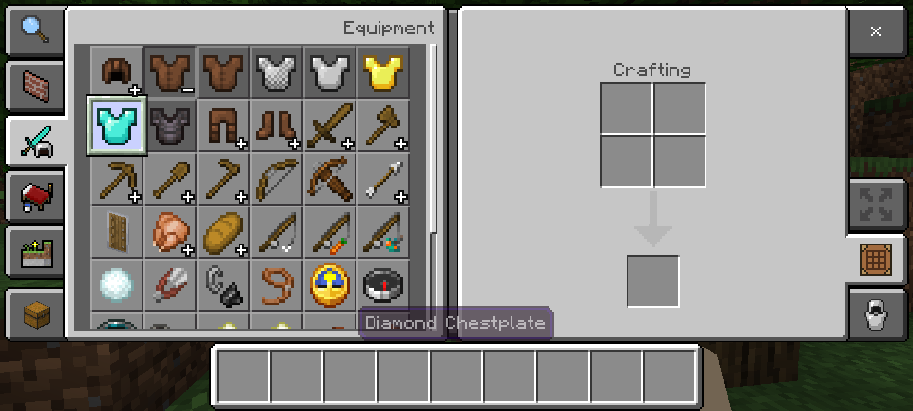

En el modo Supervivencia tienes que conseguir tus propios recursos, craftear armas, picar minerales y defenderte. En el modo Creativo tienes recursos ilimitados, eres inmortal y puedes volar para construir obras de arte gigantescas.
